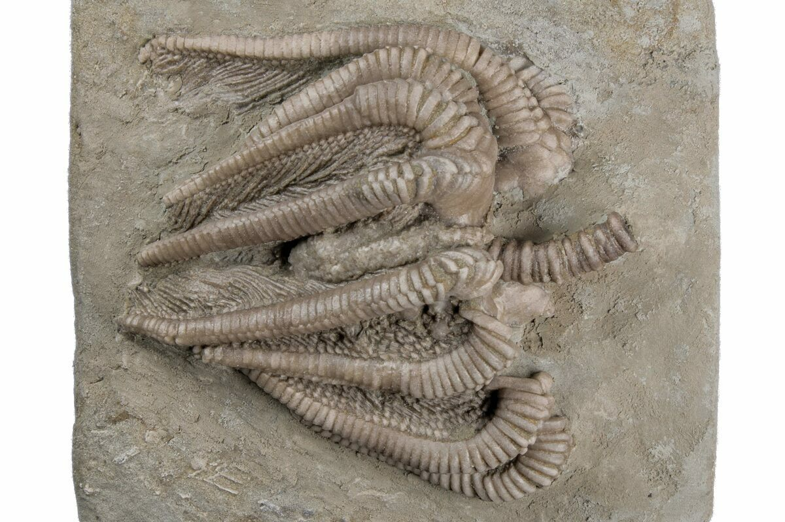

New here?

New to rockhounding and don't know where to start? Not to worry, we will show you the ropes. Click below to head over to our "Getting Started" guide
Getting StartedRocks & Minerals In Indiana


Indiana rockhounding maps to hunt for crystals, gemstones, minerals, and ores. Indiana offers a variety of rockhounding opportunities, from searching for geodes in the state's limestone formations to uncovering fossils in the Devonian shale deposits. Popular locations include the Falls of the Ohio State Park, where one can find fossils, and the Hoosier National Forest, a prime destination for geode hunting.
Shop Our Merch!

We have tons of cool t-shirts, hats, water bottles, and stickers. Show off your love for rockhounding with our high-quality merchandise.
Visit StorePlease always bring appropriate attire and do research before venturing out to rock hunt and crystal hunt. Also, be sure to verify that the location you want to hunt at is available for public access. Rockhounding.org does our best to verify, but it is your responsibility to verify as well because sometimes things change. We are not liable for any actions you take from the information you find on this site.
Snacks & Hydration

Energy Bars
Stay energized with the best energy bars for your rockhounding adventures.
Our Favorites

Must Have Rockhounding Tools


Keeping accurate records of Rockhounding & Gemstone Hunting Locations is a community effort! Know of a good spot that is missing from our maps? Feel free to submit it below. Thank you for your contributions to the rockhounding community!
Popular Rocks, Crystals, & Gemstones In Indiana
-
 Trace Fossils
Trace FossilsIndiana is well-known for trace fossils, which can be found in various locations, including Falls of the Ohio State Park and the Whitewater Formation.
Read More -
 Calcite
CalciteCalcite can be found throughout Indiana, especially in areas with limestone formations, such as Marengo and Bloomington.
Read More -
 Fluorite
FluoriteFluorite can be found in southwestern Indiana, particularly in areas near the Illinois border, such as the Cave-in-Rock district.
Read More -
 Pyrite
PyritePyrite can be found in various locations across Indiana, including coal mines and areas with shale and limestone formations.
Read More -
 Quartz
QuartzQuartz crystals can be found throughout Indiana, especially in areas with sandstone formations and in geodes, such as those from the Keokuk Geode Beds.
Read More -
 Siderite
SideriteSiderite, an iron carbonate mineral, can be found in Indiana's coal mines and shale formations.
Read More -

Crinoid Fossils
Crinoid fossils are abundant in Indiana, particularly in limestone formations, such as those found in Monroe County and the Falls of the Ohio State Park.
Read More -

-
 Malachite
MalachiteMalachite can be found in various locations across Indiana, particularly in areas with copper deposits, such as those near the Ohio River.
Read More -
 Azurite
AzuriteAzurite can be found in Indiana, often in association with malachite, in areas with copper deposits near the Ohio River.
Read More
Popular Rock Hunting Areas In Indiana
-
 Falls of the Ohio State Park
Falls of the Ohio State ParkLocated in Clarksville, Indiana, the Falls of the Ohio State Park is a popular destination for fossil hunters. The park features a 390-million-year-old fossil bed, where visitors can find marine fossils such as corals, sponges, and brachiopods.
Read More -
 Lime Creek Road
Lime Creek RoadIn the northern part of Indiana near Bedford, Lime Creek Road is a well-known spot for finding geodes containing quartz and other minerals. The geodes can be discovered in the limestone outcrops along the road.
Read More -
 St. Paul Stone Quarry
St. Paul Stone QuarrySt. Paul Stone Quarry in St. Paul, Indiana is an excellent location for collecting crinoid fossils. The quarry allows visitors to search for these ancient marine fossils in the limestone deposits during select times of the year.
Read More -
 Hoosier National Forest
Hoosier National ForestHoosier National Forest in south-central Indiana offers various rockhounding opportunities. The area is known for its geodes, chert, and occasional fossil finds, which can be found along creeks, riverbanks, and exposed bedrock.
Read More -
 Glendon Limestone Quarry
Glendon Limestone QuarryLocated near Aurora, Indiana, the Glendon Limestone Quarry is known for its abundant trilobite fossils. Visitors can search for these ancient marine creatures within the limestone layers, making it an excellent destination for fossil enthusiasts.
Read More -
 Indiana Dunes National Park
Indiana Dunes National ParkIndiana Dunes National Park, along the southern shore of Lake Michigan, offers a variety of rockhounding experiences. The park's beaches are known for their colorful beach glass, while the nearby Calumet area is rich in slag, a byproduct of the steel industry.
Read More
Geology of Indiana
Indiana's geology is characterized by sedimentary rock formations, primarily limestone, shale, and sandstone, which were formed in shallow marine environments during the Paleozoic Era. The state's landscape is largely the result of glaciation during the Pleistocene Epoch, which left behind rich, fertile soils and a gently rolling topography.
Indiana is known for its abundant limestone deposits, which have been quarried for use in construction and as a source of industrial minerals. Fossil-rich Devonian shales and Silurian reefs can also be found in the state, offering insights into Indiana's ancient marine environments and the organisms that once inhabited them.
The state's diverse geology provides ample opportunities for rockhounding, from searching for geodes and other minerals in the limestone formations to uncovering fossils in the Devonian shales.